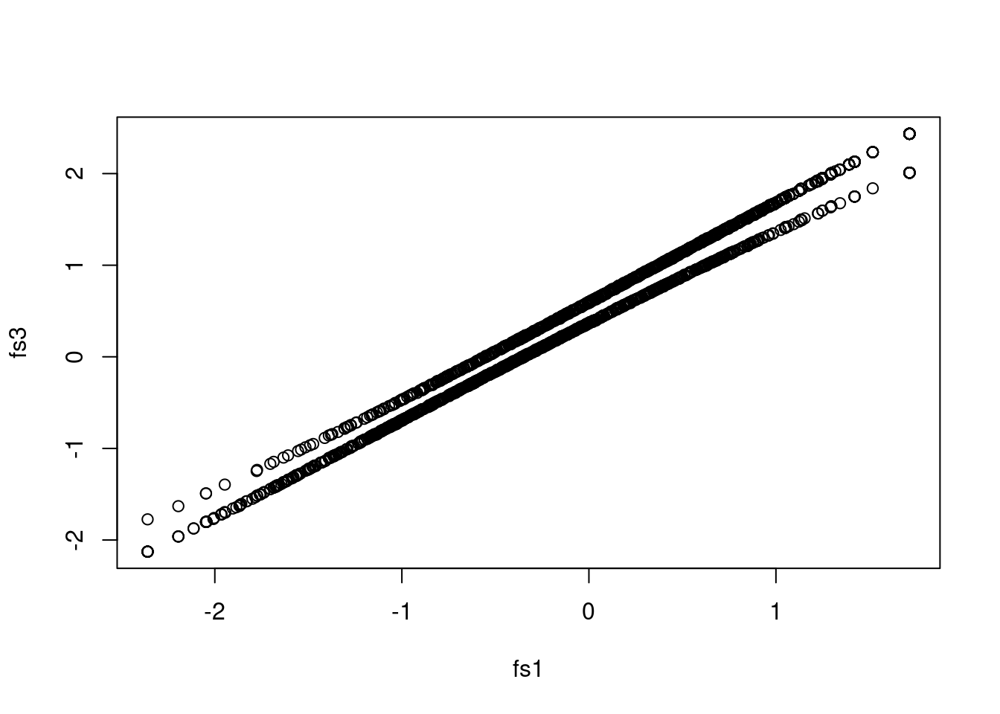
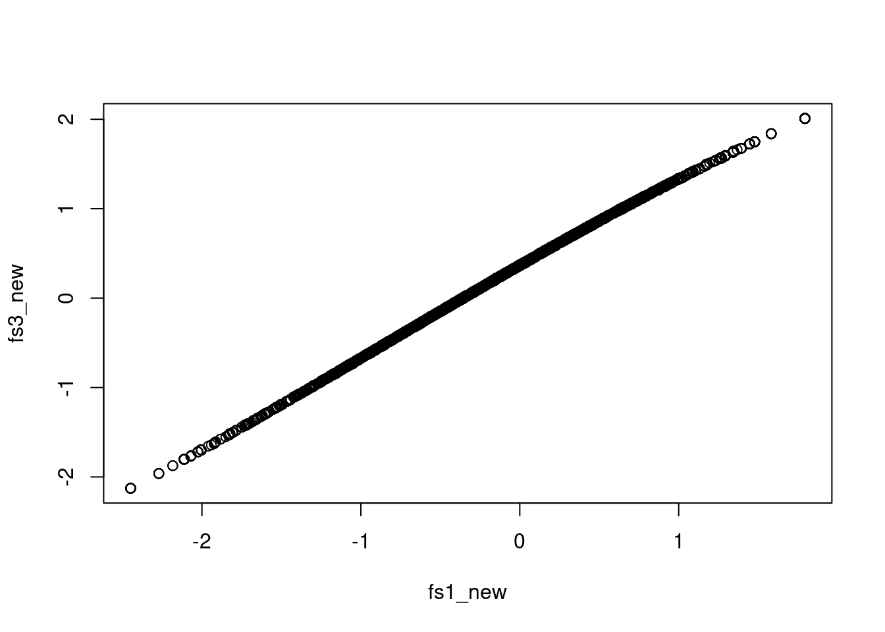
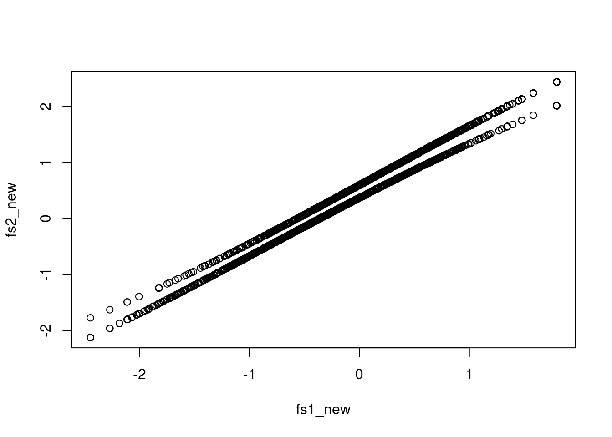

library(mirt)Loading required package: stats4Loading required package: latticeI was working on an extension to the two-stage path analysis Lai & Hsiao (2021) related to integrative data analysis, and ran into an issue described in Davoudzadeh et al. (2021) (which is a very inspiring paper). The basic idea is that when doing a multiple-group analysis to obtain factor scores, a multiple-group and a single-group approach generally give different results due to the different priors. This happens for both confirmatory factor analysis (CFA) and item response theory (IRT). The math can be found in the cited paper; here I just make some notes and show the differences.
library(mirt)Loading required package: stats4Loading required package: latticeI’ll use the simulated data from the mirt::multipleGroup() function (see ?multipleGroup). The two groups have different means (0 and 1) but the same SDs (1). Having different SDs make things a bit more complicated, so I avoided it here.
# 15 items, 2 groups, each with n = 1000
set.seed(12345)
a <- matrix(abs(rnorm(15, 1, .3)), ncol = 1)
d <- matrix(rnorm(15, 0, .7), ncol = 1)
itemtype <- rep('2PL', nrow(a))
N <- 1000
sim_dat <- rbind(
simdata(a, d, N, itemtype),
simdata(a, d, N, itemtype, mu = 1)
) |> as.data.frame()
sim_dat$group <- c(rep('D1', N), rep('D2', N))There are two ways to incorporate the group information: Multiple-group analyses and single-group analyses with the grouping variable as a covariate.
sg_irtfit <- mirt(sim_dat[, 1:15], model = 1)
Iteration: 1, Log-Lik: -17563.859, Max-Change: 0.37567
Iteration: 2, Log-Lik: -17439.794, Max-Change: 0.19031
Iteration: 3, Log-Lik: -17415.336, Max-Change: 0.08938
Iteration: 4, Log-Lik: -17409.343, Max-Change: 0.05436
Iteration: 5, Log-Lik: -17407.219, Max-Change: 0.02927
Iteration: 6, Log-Lik: -17406.462, Max-Change: 0.01671
Iteration: 7, Log-Lik: -17406.087, Max-Change: 0.00705
Iteration: 8, Log-Lik: -17406.009, Max-Change: 0.00448
Iteration: 9, Log-Lik: -17405.972, Max-Change: 0.00319
Iteration: 10, Log-Lik: -17405.942, Max-Change: 0.00108
Iteration: 11, Log-Lik: -17405.938, Max-Change: 0.00084
Iteration: 12, Log-Lik: -17405.935, Max-Change: 0.00065
Iteration: 13, Log-Lik: -17405.931, Max-Change: 0.00010# Factor score
fs1 <- fscores(sg_irtfit)mimic_irtfit <- mirt(sim_dat[, 1:15], model = 1,
covdata = sim_dat[, "group", drop = FALSE],
formula = ~ group)
Iteration: 1, Log-Lik: -17563.859, Max-Change: 0.70774
Iteration: 2, Log-Lik: -17371.328, Max-Change: 0.20764
Iteration: 3, Log-Lik: -17345.735, Max-Change: 0.13851
Iteration: 4, Log-Lik: -17308.700, Max-Change: 0.11318
Iteration: 5, Log-Lik: -17283.429, Max-Change: 0.08602
Iteration: 6, Log-Lik: -17267.239, Max-Change: 0.06126
Iteration: 7, Log-Lik: -17258.182, Max-Change: 0.04622
Iteration: 8, Log-Lik: -17253.056, Max-Change: 0.03645
Iteration: 9, Log-Lik: -17250.527, Max-Change: 0.02887
Iteration: 10, Log-Lik: -17248.078, Max-Change: 0.01472
Iteration: 11, Log-Lik: -17247.805, Max-Change: 0.00328
Iteration: 12, Log-Lik: -17247.784, Max-Change: 0.00164
Iteration: 13, Log-Lik: -17247.773, Max-Change: 0.00126
Iteration: 14, Log-Lik: -17247.769, Max-Change: 0.00105
Iteration: 15, Log-Lik: -17247.766, Max-Change: 0.00079
Iteration: 16, Log-Lik: -17247.762, Max-Change: 0.00045
Iteration: 17, Log-Lik: -17247.762, Max-Change: 0.00013
Iteration: 18, Log-Lik: -17247.762, Max-Change: 0.00011
Iteration: 19, Log-Lik: -17247.762, Max-Change: 0.00007# Factor score
fs2 <- fscores(mimic_irtfit)mg_irtfit <- multipleGroup(
sim_dat[, 1:15],
model = 1,
group = sim_dat$group,
invariance =
c("free_means", "slopes", "intercepts")
)
Iteration: 1, Log-Lik: -17563.859, Max-Change: 0.37617
Iteration: 2, Log-Lik: -17363.419, Max-Change: 0.17124
Iteration: 3, Log-Lik: -17323.202, Max-Change: 0.07469
Iteration: 4, Log-Lik: -17305.002, Max-Change: 0.05986
Iteration: 5, Log-Lik: -17292.975, Max-Change: 0.05443
Iteration: 6, Log-Lik: -17284.074, Max-Change: 0.04842
Iteration: 7, Log-Lik: -17277.118, Max-Change: 0.04322
Iteration: 8, Log-Lik: -17271.567, Max-Change: 0.03816
Iteration: 9, Log-Lik: -17267.107, Max-Change: 0.03421
Iteration: 10, Log-Lik: -17259.260, Max-Change: 0.11071
Iteration: 11, Log-Lik: -17252.001, Max-Change: 0.02217
Iteration: 12, Log-Lik: -17251.059, Max-Change: 0.01457
Iteration: 13, Log-Lik: -17250.118, Max-Change: 0.01677
Iteration: 14, Log-Lik: -17249.644, Max-Change: 0.01040
Iteration: 15, Log-Lik: -17249.285, Max-Change: 0.00864
Iteration: 16, Log-Lik: -17248.750, Max-Change: 0.03253
Iteration: 17, Log-Lik: -17248.087, Max-Change: 0.00731
Iteration: 18, Log-Lik: -17248.018, Max-Change: 0.00380
Iteration: 19, Log-Lik: -17247.913, Max-Change: 0.00828
Iteration: 20, Log-Lik: -17247.867, Max-Change: 0.00216
Iteration: 21, Log-Lik: -17247.848, Max-Change: 0.00198
Iteration: 22, Log-Lik: -17247.816, Max-Change: 0.00714
Iteration: 23, Log-Lik: -17247.782, Max-Change: 0.00110
Iteration: 24, Log-Lik: -17247.778, Max-Change: 0.00095
Iteration: 25, Log-Lik: -17247.774, Max-Change: 0.00296
Iteration: 26, Log-Lik: -17247.767, Max-Change: 0.00066
Iteration: 27, Log-Lik: -17247.766, Max-Change: 0.00049
Iteration: 28, Log-Lik: -17247.765, Max-Change: 0.00230
Iteration: 29, Log-Lik: -17247.763, Max-Change: 0.00020
Iteration: 30, Log-Lik: -17247.762, Max-Change: 0.00016
Iteration: 31, Log-Lik: -17247.762, Max-Change: 0.00065
Iteration: 32, Log-Lik: -17247.762, Max-Change: 0.00010
Iteration: 33, Log-Lik: -17247.762, Max-Change: 0.00012
Iteration: 34, Log-Lik: -17247.762, Max-Change: 0.00010
Iteration: 35, Log-Lik: -17247.762, Max-Change: 0.00008# Factor score
fs3 <- fscores(mg_irtfit)# The numbers are virtually the same; however, the single-group approach
# standardizes on the combined data, whereas the MIMIC and the multiple-group
# approaches standardize on just the first group. Therefore, a scale adjustment
# will be needed to put the parameters on the same scale
# Scale adjustment factor:
total_sd <- sqrt(1 + coef(mg_irtfit)$D2$GroupPars[1, "MEAN_1"]^2 / 4)
sg_pars <- coef(sg_irtfit, simplify = TRUE)$items # single-group (unadjusted)
sg_pars[, 1] / total_sd # discriminations with an approximate scale adjustment Item_1 Item_2 Item_3 Item_4 Item_5 Item_6 Item_7 Item_8
1.1279379 1.2803483 0.9396957 0.8741506 1.1847194 0.4434912 1.2258472 0.9952438
Item_9 Item_10 Item_11 Item_12 Item_13 Item_14 Item_15
1.0056366 0.6777604 0.8802975 1.4708279 1.2180373 1.1271193 0.7513079 coef(mimic_irtfit, simplify = TRUE)$items # single-group with covariates a1 d g u
Item_1 1.1344745 0.56141379 0 1
Item_2 1.2748144 -0.71750014 0 1
Item_3 0.9263239 -0.23168942 0 1
Item_4 0.8788699 0.85739018 0 1
Item_5 1.2010639 0.18724951 0 1
Item_6 0.4345348 0.62056936 0 1
Item_7 1.2176948 0.96014551 0 1
Item_8 0.9742907 -0.42310233 0 1
Item_9 1.0080648 -1.06816100 0 1
Item_10 0.6773441 -1.05699733 0 1
Item_11 0.8848418 1.22591144 0 1
Item_12 1.4724849 -0.23745600 0 1
Item_13 1.2160712 0.44539675 0 1
Item_14 1.1248698 0.45726162 0 1
Item_15 0.7457826 -0.06616818 0 1coef(mg_irtfit, simplify = TRUE)$D1$items # multiple-group a1 d g u
Item_1 1.1344531 0.56249099 0 1
Item_2 1.2744706 -0.71613006 0 1
Item_3 0.9262275 -0.23080999 0 1
Item_4 0.8788613 0.85822186 0 1
Item_5 1.2009517 0.18839934 0 1
Item_6 0.4345115 0.62096775 0 1
Item_7 1.2178070 0.96135430 0 1
Item_8 0.9741636 -0.42215719 0 1
Item_9 1.0078107 -1.06705954 0 1
Item_10 0.6772300 -1.05630348 0 1
Item_11 0.8848795 1.22678453 0 1
Item_12 1.4721600 -0.23594789 0 1
Item_13 1.2160331 0.44655427 0 1
Item_14 1.1248339 0.45832468 0 1
Item_15 0.7457149 -0.06547177 0 1As shown below, the single-group approach gives different results then the MIMIC and the multiple-group approaches.
head(cbind(fs1, fs2, fs3)) F1 F1 F1
1 -0.02550602 0.3402118 0.3394847
2 0.77540259 1.1504818 1.1497899
3 0.36027615 0.7367433 0.7361048
4 0.65733506 1.0313568 1.0307768
5 0.69447276 1.0671403 1.0665020
6 0.53033799 0.9113015 0.9106491plot(fs1, fs2)
plot(fs1, fs3)
This is particularly problematic when looking at the mean differences across groups:
tapply(fs1, sim_dat$group, mean) # single-group; shrinkage applies to differences D1 D2
-0.3367292 0.3359305 tapply(fs2, sim_dat$group, mean) # MIMIC; shrinkage does not apply to differences D1 D2
0.0001759437 0.9643186768 tapply(fs3, sim_dat$group, mean) # MGIRT; shrinkage does not apply to differences D1 D2
-0.0005464251 0.9634912005 In mirt, one can change the prior to get factor scores for a pooled population:
fs1_new <- fscores(sg_irtfit,
# Use the mean implied from MGIRT
mean = 0,
cov = total_sd)
fs2_new <- fscores(mimic_irtfit, mean = 0, cov = 1)
fs3_new <- fscores(mg_irtfit,
mean = c(0, 0), cov = c(1, 1))
tapply(fs1_new, sim_dat$group, mean) # single-group; shrinkage applies to differences D1 D2
-0.3428453 0.3502421 tapply(fs2_new, sim_dat$group, mean) # MIMIC; shrinkage STILL does not apply to differences D1 D2
0.0001759437 0.9643186768 tapply(fs3_new, sim_dat$group, mean) # MGIRT; shrinkage applies to differences D1 D2
-0.0005464251 0.6886014934 Now that the single-group and the multiple-group analyses are much closer (other than the difference in the means, as the single-group analysis sets the grand mean to 0, whereas the multiple-group analysis sets the mean of the first group to 0):
plot(fs1_new, fs3_new)
However, it looks like with MIMIC needs a different kind of priors to do scoring.
plot(fs1_new, fs2_new)
As discussed in Davoudzadeh et al. (2021), the default options in getting factor scores in a multiple-group analysis may not be appropriate as it assumes different priors for different groups. This also happens when treating the grouping variable as a covariate, as in the MIMIC (multiple-indicator-multiple-causes) model, which is the basis of the moderated nonlinear factor analysis (Curran et al., doi: 10.1080/00273171.2014.889594)—an approach commonly used for integrative data analysis. This deserves attentions as if one is going to use factor scores to estimate differences among certain subgroups—either the original grouping variable (\(G\)) in factor score estimation or some other variables related to \(G\), one gets different estimates depending on the different factor score approaches.